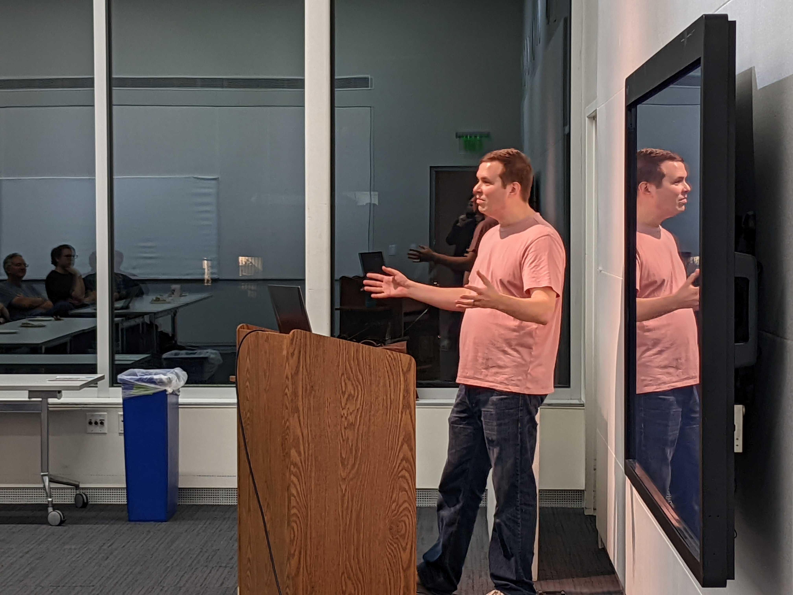

A code base, even a working one, can bring a development organization to its knees when the code itself isn't clean. Every year, countless hours and significant resources are lost because of poorly written code. Join us as David Hoese walks us through an introduction on how to develop clean, maintainable code. We'll also learn how using tests to lead the development process encourages simple designs and inspires confidence.
David Hoese is a software developer at the Space Science and Engineering Center at the University of Wisconsin-Madison. He graduated with a Bachelor's degree in Computer Engineering from UW-Madison. Dave works on writing software tools to assist atmospheric scientists with a focus on analyzing satellite and ground-based instrument data.